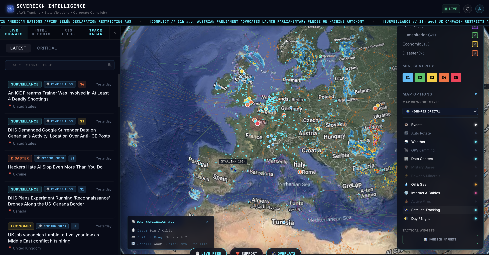

Turn fast-moving global data, regulatory changes, and operational signals into clear, citation-backed answers — on our live dashboard or inside a custom platform built around your organization's own data.
Toggle any intelligence layer directly on the live map. Click a layer to explore what it reveals.
Unify live data streams, interactive geospatial maps, and private RAG AI into a single high-clarity dashboard — ready out of the box or custom-built for your organization.
Track live events, disruptions, and emerging risks on an interactive 3D/2D map — complete with automated severity scoring and direct source verification.
Talk directly to your databases, internal documents, and live feeds using citation-backed Retrieval-Augmented Generation (RAG) for instant, audit-ready answers.
Continuously ingest APIs, structured databases, news feeds, and research reports — automatically cleaned, deduplicated, classified, and searchable in real time.
Map critical infrastructure, data centers, logistics routes, and market shifts on one spatial canvas so teams spot bottlenecks before they impact business continuity.
Monitor fast-changing legislation, AI governance standards, and enforcement actions across global jurisdictions with structured side-by-side comparisons.
Commission a dedicated, secure platform engineered around your company's private data sources, KPIs, vector search, custom alerts, and executive reporting.
Critical insights are trapped in scattered spreadsheets, slow reports, and disconnected tools. Sovereign turns fragmented data into instant clarity.
Manual reports and periodic digests always lag behind reality. By the time updates reach decision-makers, the window to act has already closed.
Teams lose hours cross-checking spreadsheets, PDFs, internal databases, and external feeds just to answer one straightforward question.
Regulations, markets, and operational risks evolve faster than generic off-the-shelf dashboards can keep up — leaving costly blindspots across teams.
Signals streaming through Sovereign Dash in real time.
Everything you need — feed, globe, overlays, satellite radar — in a single ultra-wide command interface.

Ask plain-English questions across live feeds, global records, or your company's own private databases — and get clear, source-verified answers in seconds.
Skip hours of manual searching across spreadsheets, legal filings, and news feeds. Ask any question in plain English and get concise, verifiable answers immediately.
Need this capability for your own business? We build dedicated dashboards with private RAG AI connected securely to your internal databases, documents, and live operations.
Whether you run operations, finance, logistics, compliance, or research — we build dedicated real-time dashboards and private RAG AI tailored to your exact data and workflows.
Launch a private, branded instance of Sovereign combining your internal databases, live external feeds, interactive maps, and citation-verified AI in one secure hub.
Select what you're looking to build and tell us briefly about your data or goals. We reply directly within 24 hours.